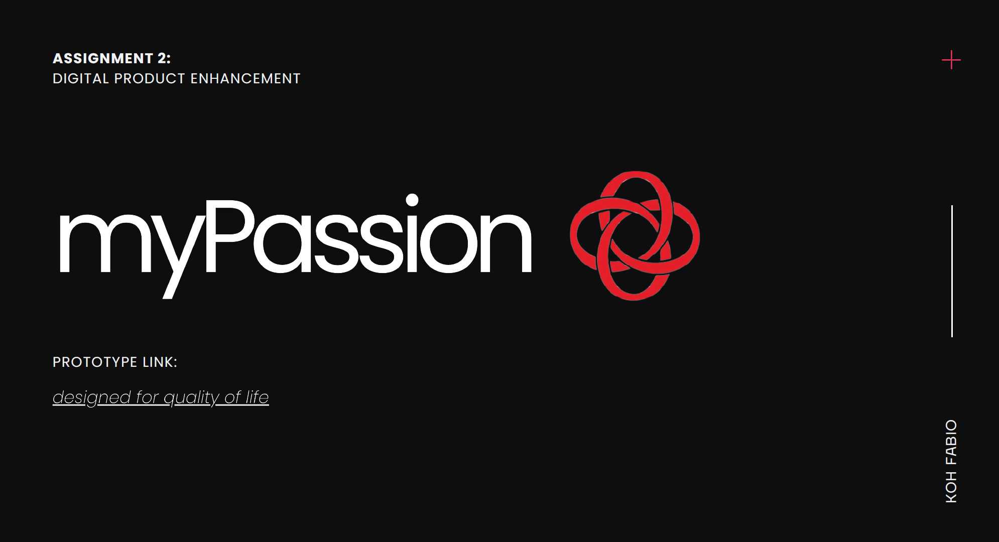
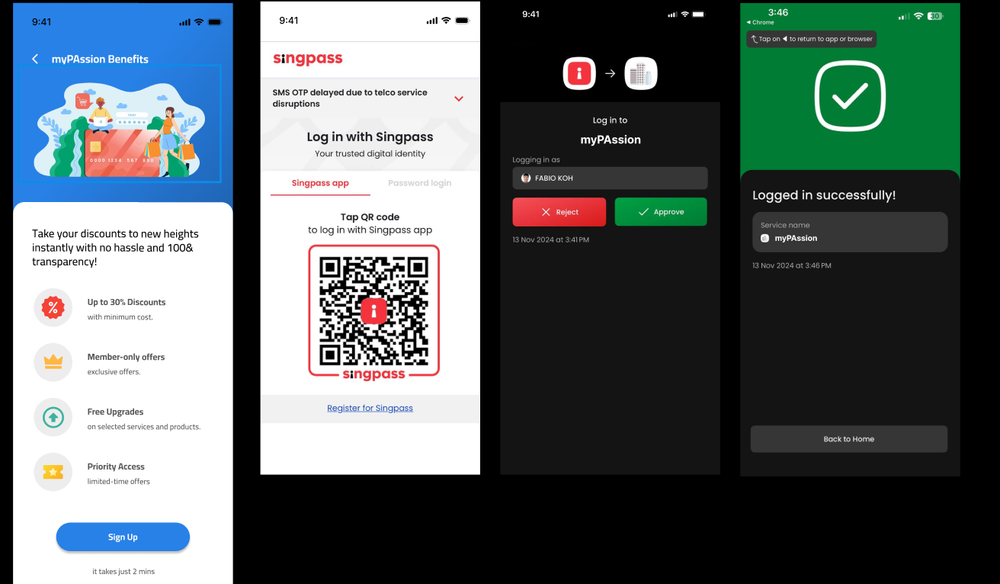
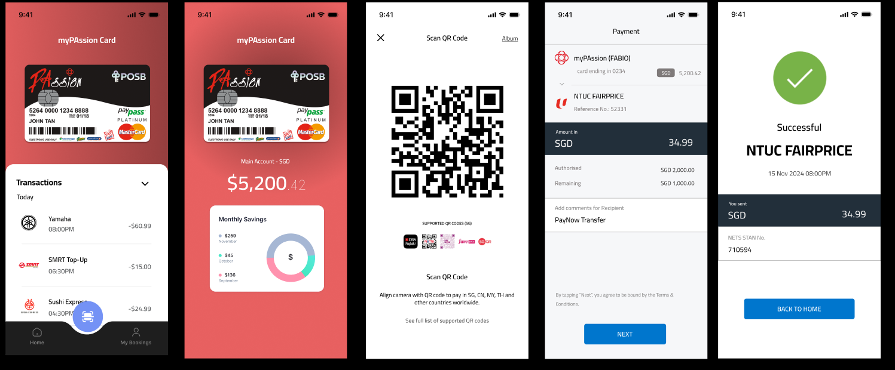
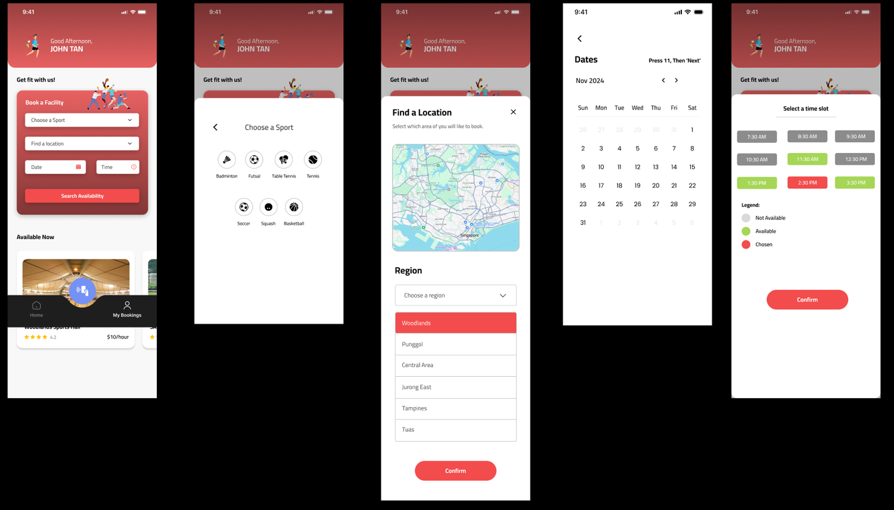
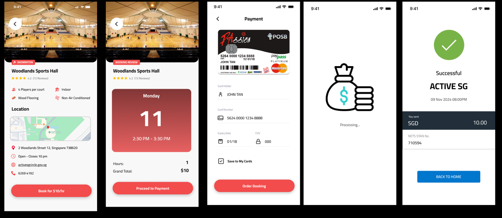
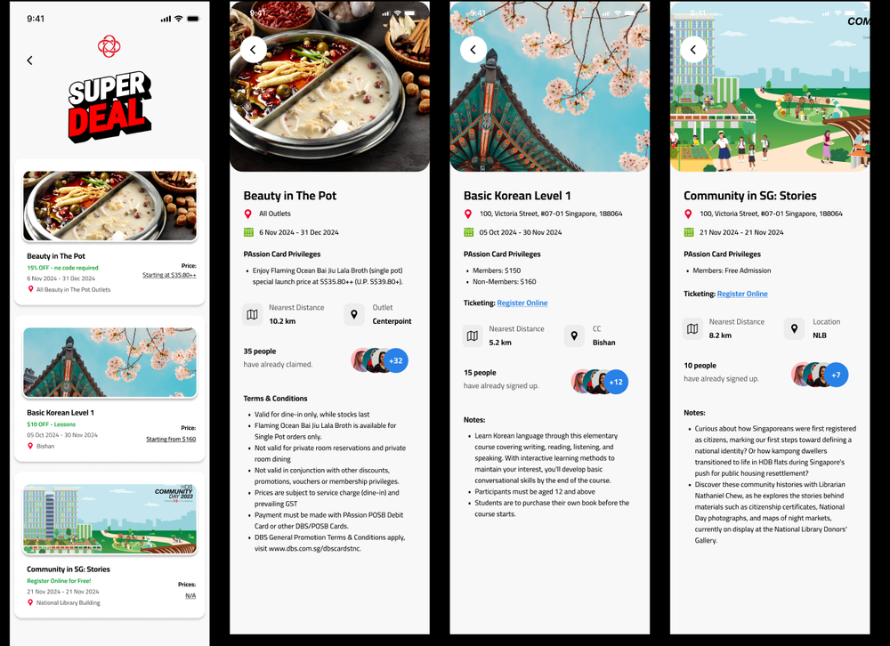
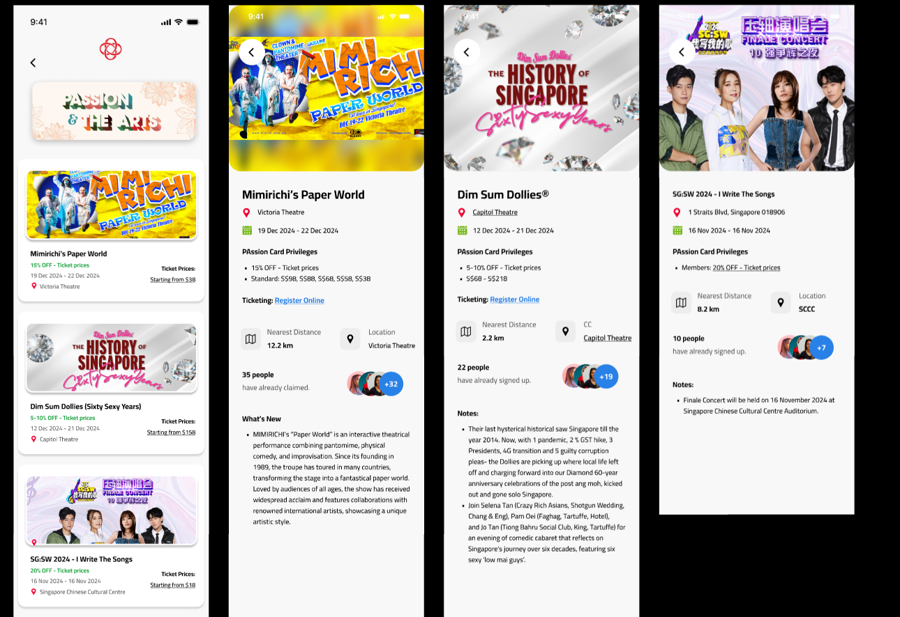
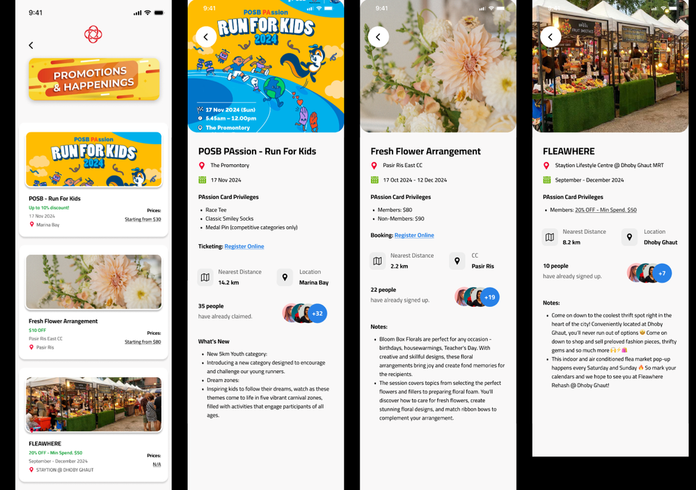

A UX redesign prototype for Singapore's national community card app — tackling a 2.1★ rating with a simplified payments, facility booking, and events experience built for everyday residents.
Learn More
Over the years, the MyPassion app accumulated significant usability debt. With a 2.1★ rating across 128+ reviews, users consistently reported broken update loops, unclear functionality, and mounting confusion after the yuu app absorbed its points programme. The app's original purpose — managing payments, rewards, and facility bookings — had become buried under friction.
I created a high-fidelity redesign prototype focused on three core user journeys: onboarding via SingPass, everyday card payments, and community facility bookings. The goal was to eliminate ambiguity at each step and rebuild user confidence in the app through clarity and simplicity.
The onboarding process lets users sign up for their myPAssion digital card quickly and securely through Singpass. After tapping Sign Up, users authenticate using the Singpass app — either by scanning a QR code or approving the login request directly on their mobile device.
Once authenticated, a confirmation screen verifies the login before directing users to their myPAssion digital card. Every step is deliberate: reduce uncertainty, show progress, and reassure the user that their identity is protected.

The myPAssion digital card functions like a full payment card for everyday spending. Users can tap to pay in-store or scan QR codes to complete purchases across supported SGQR merchants — locally and overseas.
The home dashboard surfaces the most critical information at a glance: recent transactions, account balance, and a monthly savings summary. A built-in QR scanner enables fast payments, while a confirmation screen ensures every transaction is transparent before it goes through.

"A payment flow should feel invisible — fast enough that the user never second-guesses whether it worked."
The facility booking flow is broken into five clear steps — each screen handles exactly one decision. Users begin by choosing their sport from an icon-based grid, then locate a venue through a map-assisted picker with regional filters. A calendar view follows for date selection, then a colour-coded time slot grid distinguishes available, unavailable, and chosen slots at a glance.

After selecting a slot, users see the venue details — rating, amenities, location, and pricing. A booking review screen confirms the chosen date, time, and total cost before directing to payment. The checkout accepts the myPAssion card directly, and a processing screen reassures users before the success confirmation appears with a full transaction receipt.

The Events Hub consolidates Passion Card deals, workshops, community activities, merchant perks, and venue bookings into a single browsable feed. Each listing shows the discount, location, event dates, and starting price — everything needed to compare at a glance without opening a detail page.


Selecting a deal or event opens a detailed page with venue information, distance, Passion Card privileges, registration count, and terms & conditions. For courses and workshops, users can view session schedules and notes before registering — making discovery and commitment a single, connected experience.
